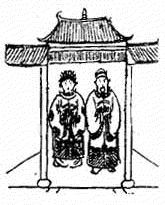
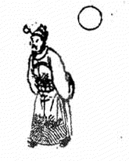
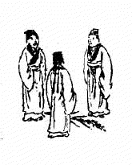
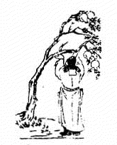
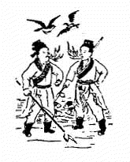
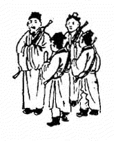
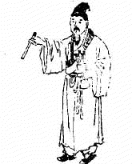

1. 51 甲寅 ䷒ 兑下坤上 临 1.1. 讖曰 1.2. 頌曰 1.3. 金聖歎 2. 52 乙卯 ䷊ 乾下坤上 泰 2.1. 讖曰 2.2. 頌曰 2.3. 金聖歎 3. 53 丙辰 ䷡ 乾下震上 大壮 3.1. 讖曰 3.2. 頌曰 3.3. 金聖歎 4. 54 丁巳 ䷪ 乾下兑上 夬 4.1. 讖曰 4.2. 頌曰 4.3. 金聖歎 5. 55 戊午 ䷄ 乾下坎上 需 5.1. 讖曰 5.2. 頌曰 5.3. 金聖歎 6. 56 己未 ䷇ 坤下坎上 比 6.1. 讖曰 6.2. 頌曰 6.3. 金聖歎 7. 57 庚申 ䷹ 兑下兑上 泽 7.1. 讖曰 7.2. 頌曰 7.3. 金聖歎 8. 58 辛酉 ䷮ 坎下兑上 困 8.1. 讖曰 8.2. 頌曰 8.3. 金聖歎 9. 59 壬戌 ䷞ 根下兑上 咸 9.1. 讖曰 9.2. 頌曰 9.3. 金聖歎 10. 60 癸亥 ䷬ 坤下兑上 萃 10.1. 讖曰 10.2. 頌曰 10.3. 金聖歎 1. 51 甲寅 ䷒ 兑下坤上 临 1.1. 讖曰 阴阳和 化以正 坤顺而感 后见尧舜 1.2. 頌曰 谁云女子尚刚强 坤德居然感四方. 重见中天新气象 卜年一六寿而康 1.3. 金聖歎 「此象乃明君得贤后之助，化行国内，重见昇平，又一治也。」  2. 52 乙卯 ䷊ 乾下坤上 泰 2.1. 讖曰 彗星乍见 不利东北 踽踽何之 瞻彼乐国 2.2. 頌曰 欃枪一点现东方 吴楚依然有帝王 门外客来终不久 乾坤再造在角亢 2.3. 金聖歎 「此象主东北被夷人所扰，有迁都南方之兆。 角亢南极也。其后有明君出，驱逐外人，再庆昇平。」  3. 53 丙辰 ䷡ 乾下震上 大壮 3.1. 讖曰 关中天子 礼贤下士 顺天休命 半老有子 3.2. 頌曰 一个孝子自西来 手握乾纲天下安 域中两见旌旗美 前人不及后人才 3.3. 金聖歎 「此象有一秦姓名孝者，登极关中，控制南北，或以秦为国号，此一治也。」  4. 54 丁巳 ䷪ 乾下兑上 夬 4.1. 讖曰 磊磊落落 残棋一局 啄息苟安 虽笑亦哭 4.2. 頌曰 不分牛鼠与牛羊 去毛存鞟尚称强 环中自有真龙出 九曲黄河水不黄 4.3. 金聖歎 「此象有实去名存之兆，或如周末时，号令不行，尚颁止朔：亦久合必分之徵也。」 5. 55 戊午 ䷄ 乾下坎上 需 5.1. 讖曰 惧则生戒 无远勿届 水边有女 对日自拜 5.2. 頌曰 觊觎神器终无用 翼翼小心有臣众 转危为安见节义 未必河山是我送 5.3. 金聖歎 「此象有一石姓或刘姓一统中原，有一姓汝者谋篡夺之， 幸有大臣尽忠王室，戒谨惕励，一切外侮不灭自灭，虽乱而亦治也。」  6. 56 己未 ䷇ 坤下坎上 比 6.1. 讖曰 飞者非鸟 潜者非鱼 战不在兵 造化游戏 6.2. 頌曰 海疆万里尽云烟 上迄云霄下及泉 金母木公工幻弄 干戈未接祸连天 6.3. 金聖歎 「此象行军用火，即乱不在兵之意。 颂云，海疆万里，则战争之烈，不仅在于中国也。」  7. 57 庚申 ䷹ 兑下兑上 泽 7.1. 讖曰 物极必反 以毒制毒 三尺童子 四夷讋服 7.2. 頌曰 坎离相剋见天倪 天使斯人弭杀机 不信奇才产吴越 重洋从此戢兵师 7.3. 金聖歎 「此象言吴越之间有一童子，能出奇制胜， 将燎原之火扑灭淨尽，而厄运自此终矣，又一治也。」 8. 58 辛酉 ䷮ 坎下兑上 困 8.1. 讖曰 大乱平 四夷服 称兄弟 六七国 8.2. 頌曰 烽烟淨尽海无波 称王称帝又统和 犹有煞星隐西北 未能遍唱太平歌 8.3. 金聖歎 「此象有四夷来王，海不扬波之兆。 惜乎西北一隅尚未平靖，犹有遗憾，又一治也。」  9. 59 壬戌 ䷞ 根下兑上 咸 9.1. 讖曰 无城无府 无尔无我 天下一家 治臻大化 9.2. 頌曰 一人为大世界福 手执籤筒拔去竹 红黄黑白不分明 东南西北尽和睦 9.3. 金聖歎 「此乃大同之象，人生其际，饮和食德，当不知若何愉快也。 惜乎其数已终，其或反本归原，还于混噩欤。」  10. 60 癸亥 ䷬ 坤下兑上 萃 10.1. 讖曰 一阴一阳 无始无终 终者自终 始者自始 10.2. 頌曰 茫茫天数此中求 世道兴衰不自由 万万千千说不尽 不如推背去归休 10.3. 金聖歎 「一人在前，一人在后，有往无来，无独有偶，以此殿图，其寓意至深远。 盖无象之象胜于有象。我以不解解之，著者有知当亦许可。」